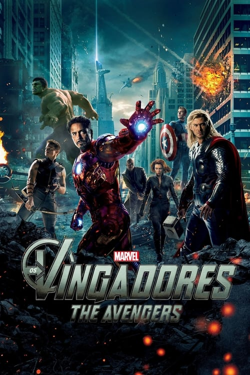

filmes - Séries - Marvel e Sony -

Loki, o irmão de Thor, ganha acesso ao poder ilimitado do cubo cósmico ao roubá-lo de dentro das instalações da S.H.I.E.L.D. Nick Fury, o diretor desta agência internacional que mantém a paz, logo reúne os únicos super-heróis que serão capazes de defender a Terra de ameaças sem precedentes. Homem de Ferro, Capitão América, Hulk, Thor, Viúva Negra e Gavião Arqueiro formam o time dos sonhos de Fury, mas eles precisam aprender a colocar os egos de lado e agir como um grupo em prol da humanidade.
Trailer - Os Vingadores_ The Avengers- Trailer Oficial - Dublado - assistir
Data de lançamento: 27 de abril de 2012 (Brasil)
Diretor: Joss Whedon
Atores: Robert Downey Jr., Chris Hemsworth, Chris Evans, Clark Gregg , Cobie Smulders e outros